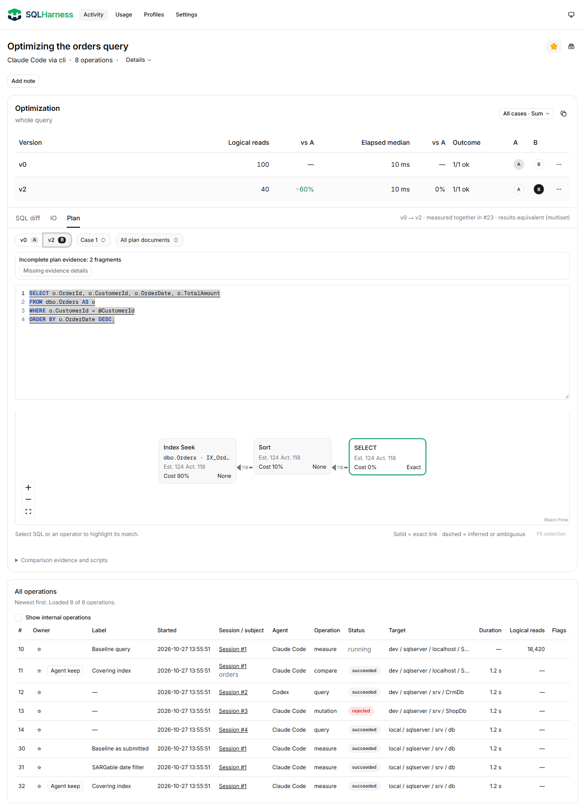
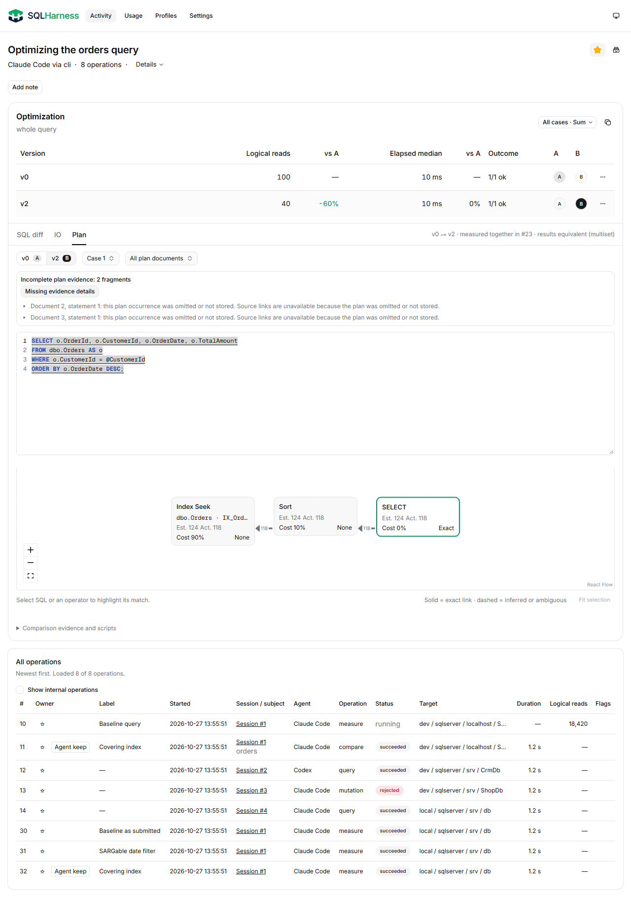
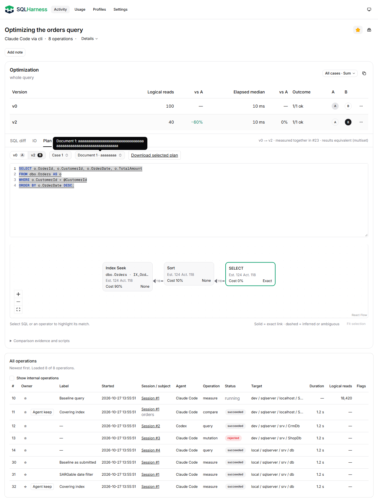
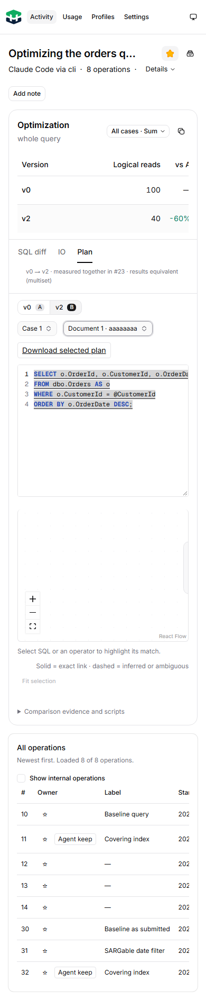
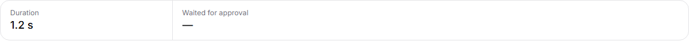
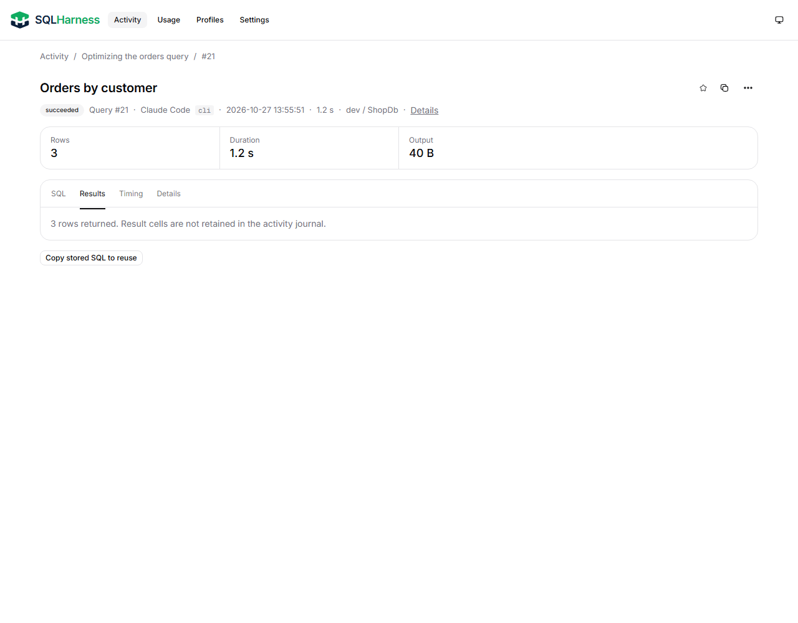
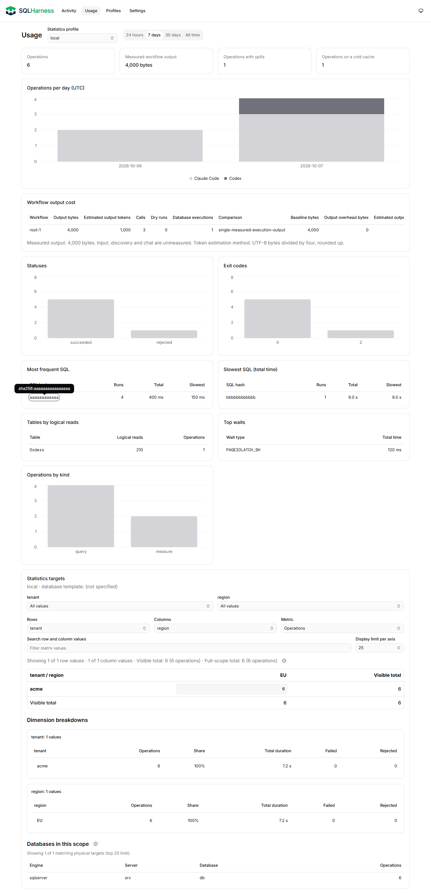
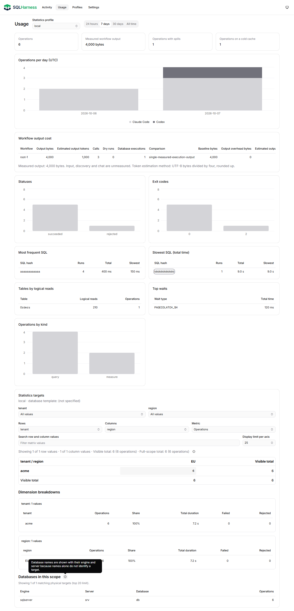
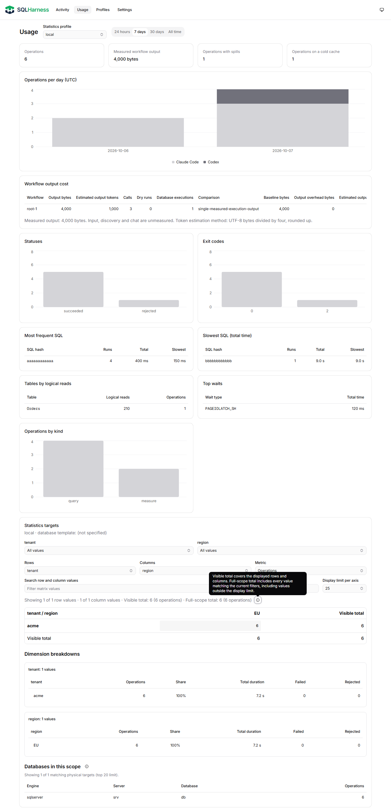
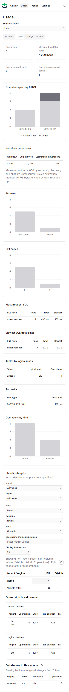

Segmenty A/B, puste metadane pominięte, widoczny licznik braków

Selektor A/B z pierwszej iteracji poniżej został odrzucony wizualnie. Bieżąca korekta proporcji i etykiet.
Rzeczywisty build; kontrolowane fixtures wyłącznie w przeglądarce. Bez zapisów do journala i baz.
Weryfikacja i zakres · Wyniki browser QA









